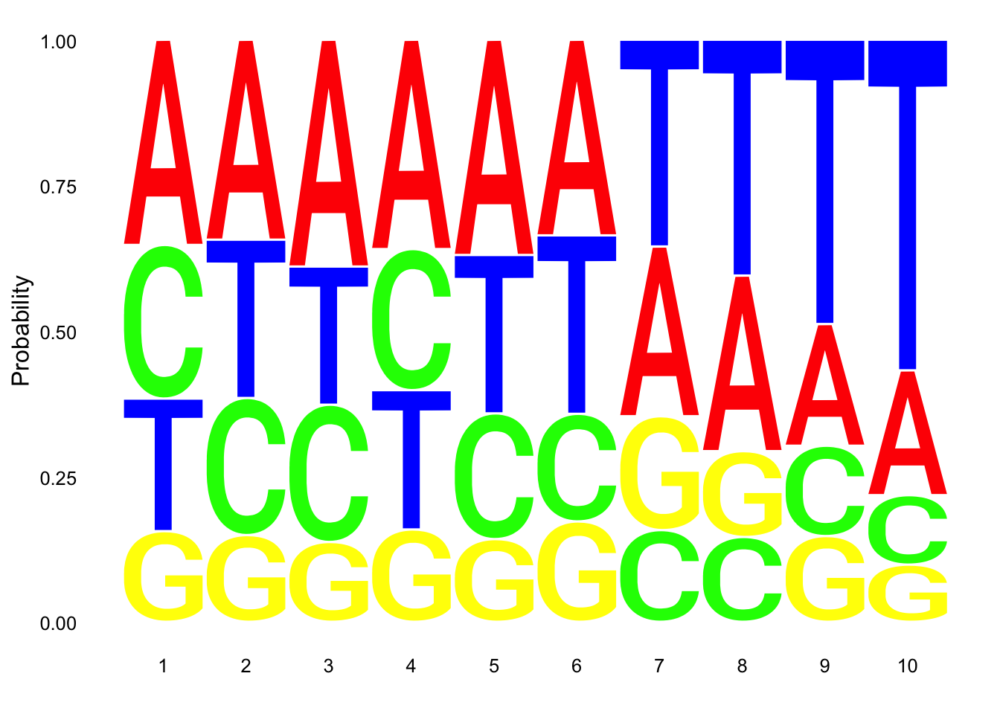
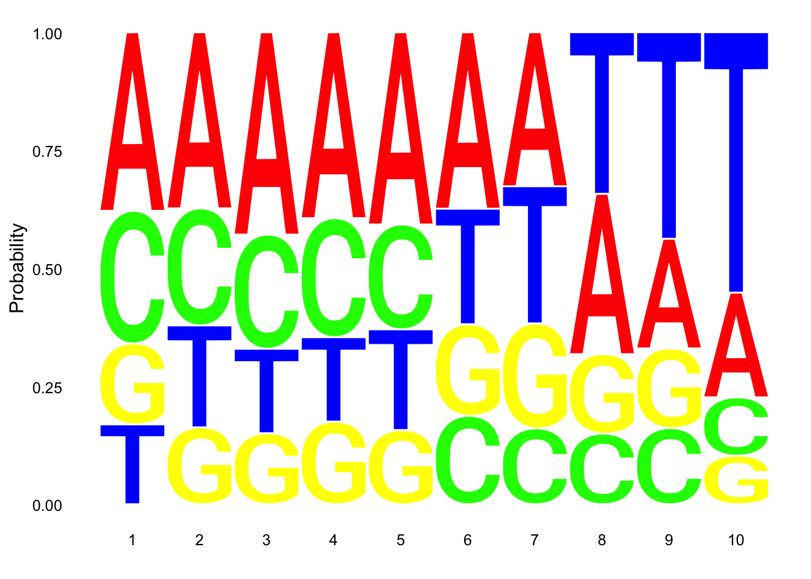
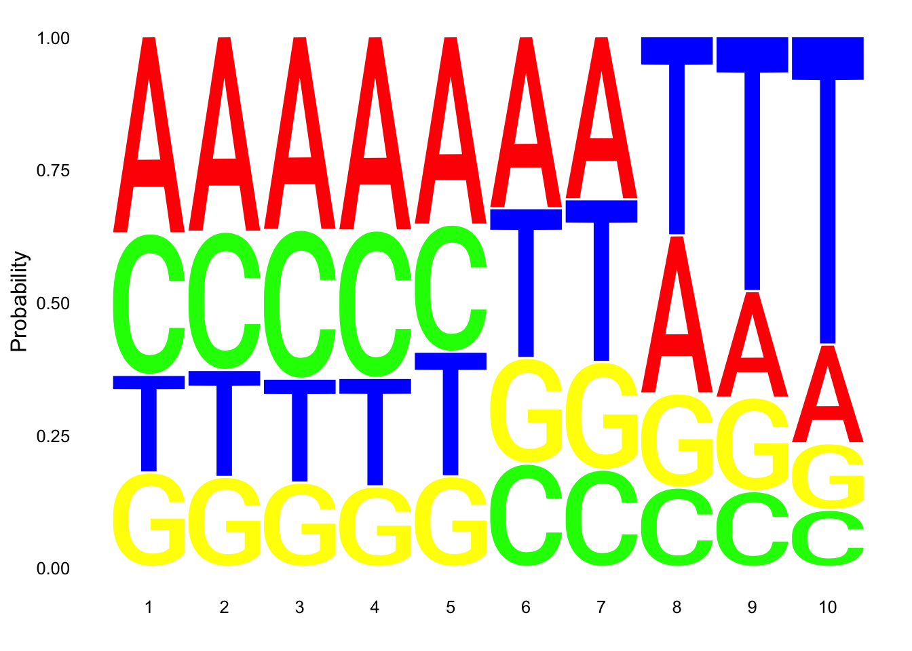
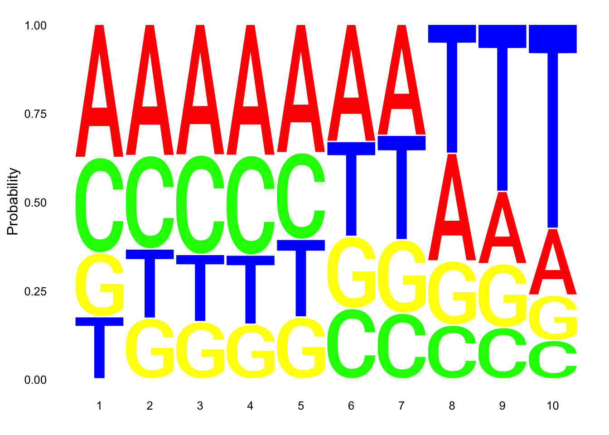
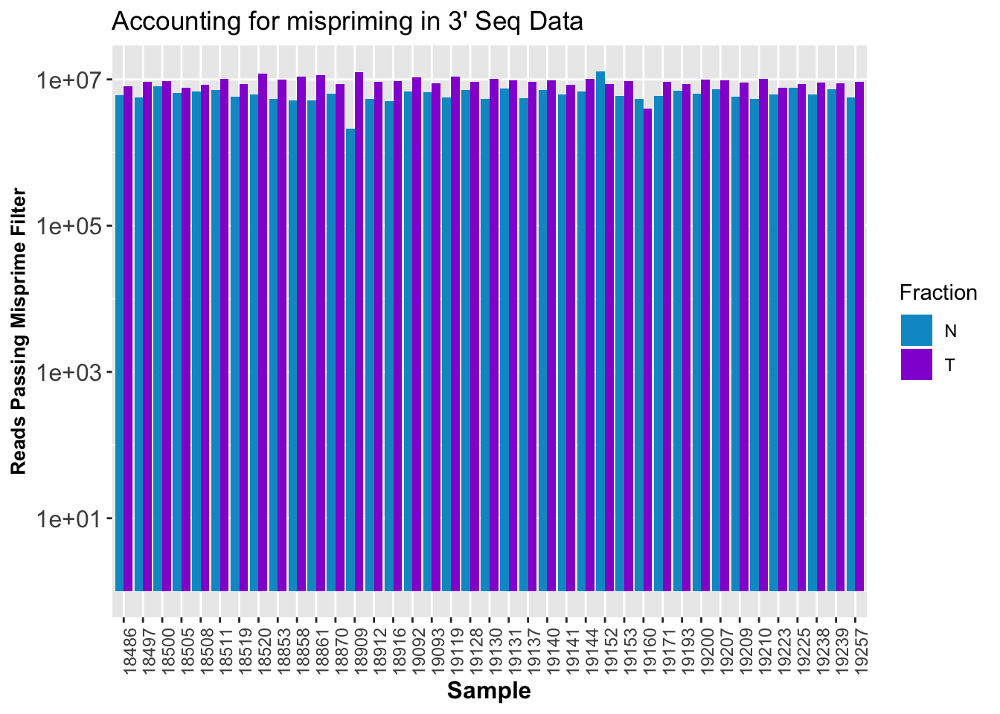
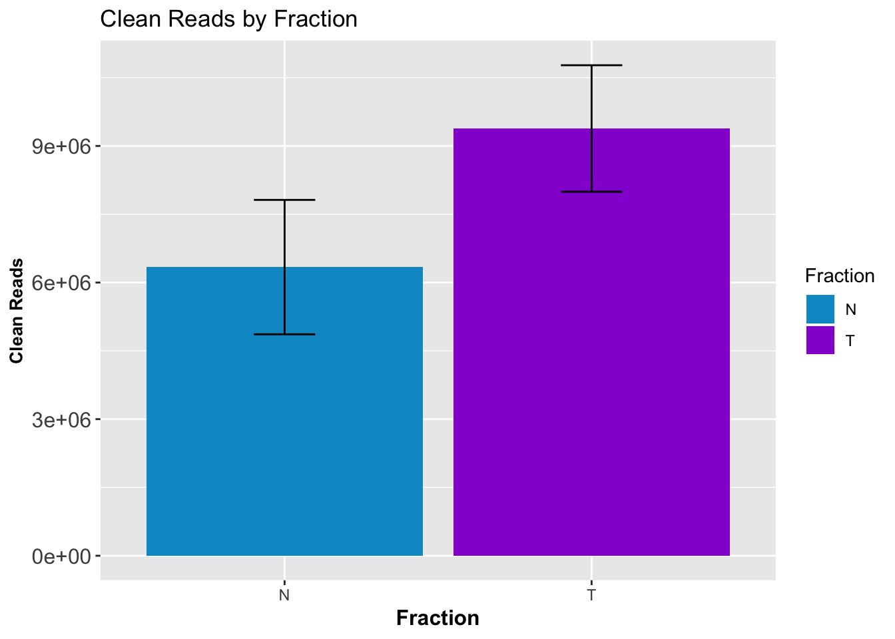

Last updated: 2019-01-14
workflowr checks: (Click a bullet for more information) ✔ R Markdown file: up-to-date
Great! Since the R Markdown file has been committed to the Git repository, you know the exact version of the code that produced these results.
✔ Environment: empty
Great job! The global environment was empty. Objects defined in the global environment can affect the analysis in your R Markdown file in unknown ways. For reproduciblity it’s best to always run the code in an empty environment.
✔ Seed:
set.seed(12345)
The command set.seed(12345) was run prior to running the code in the R Markdown file. Setting a seed ensures that any results that rely on randomness, e.g. subsampling or permutations, are reproducible.
✔ Session information: recorded
Great job! Recording the operating system, R version, and package versions is critical for reproducibility.
✔ Repository version: 6bc9243
wflow_publish or wflow_git_commit). workflowr only checks the R Markdown file, but you know if there are other scripts or data files that it depends on. Below is the status of the Git repository when the results were generated:
Ignored files:
Ignored: .DS_Store
Ignored: .Rhistory
Ignored: .Rproj.user/
Ignored: data/.DS_Store
Ignored: output/.DS_Store
Untracked files:
Untracked: KalistoAbundance18486.txt
Untracked: analysis/DirectionapaQTL.Rmd
Untracked: analysis/PreAshExplore.Rmd
Untracked: analysis/YL_QTL_test.Rmd
Untracked: analysis/ncbiRefSeq_sm.sort.mRNA.bed
Untracked: analysis/snake.config.notes.Rmd
Untracked: analysis/verifyBAM.Rmd
Untracked: code/PeaksToCoverPerReads.py
Untracked: code/strober_pc_pve_heatmap_func.R
Untracked: data/18486.genecov.txt
Untracked: data/APApeaksYL.total.inbrain.bed
Untracked: data/ChromHmmOverlap/
Untracked: data/GM12878.chromHMM.bed
Untracked: data/GM12878.chromHMM.txt
Untracked: data/LianoglouLCL/
Untracked: data/LocusZoom/
Untracked: data/NuclearApaQTLs.txt
Untracked: data/PeakCounts/
Untracked: data/PeaksUsed/
Untracked: data/RNAkalisto/
Untracked: data/TotalApaQTLs.txt
Untracked: data/Totalpeaks_filtered_clean.bed
Untracked: data/UnderstandPeaksQC/
Untracked: data/YL-SP-18486-T-combined-genecov.txt
Untracked: data/YL-SP-18486-T_S9_R1_001-genecov.txt
Untracked: data/YL_QTL_test/
Untracked: data/apaExamp/
Untracked: data/bedgraph_peaks/
Untracked: data/bin200.5.T.nuccov.bed
Untracked: data/bin200.Anuccov.bed
Untracked: data/bin200.nuccov.bed
Untracked: data/clean_peaks/
Untracked: data/comb_map_stats.csv
Untracked: data/comb_map_stats.xlsx
Untracked: data/comb_map_stats_39ind.csv
Untracked: data/combined_reads_mapped_three_prime_seq.csv
Untracked: data/diff_iso_trans/
Untracked: data/ensemble_to_genename.txt
Untracked: data/example_gene_peakQuant/
Untracked: data/explainProtVar/
Untracked: data/filtered_APApeaks_merged_allchrom_refseqTrans.closest2End.bed
Untracked: data/filtered_APApeaks_merged_allchrom_refseqTrans.closest2End.noties.bed
Untracked: data/first50lines_closest.txt
Untracked: data/gencov.test.csv
Untracked: data/gencov.test.txt
Untracked: data/gencov_zero.test.csv
Untracked: data/gencov_zero.test.txt
Untracked: data/gene_cov/
Untracked: data/joined
Untracked: data/leafcutter/
Untracked: data/merged_combined_YL-SP-threeprimeseq.bg
Untracked: data/mol_overlap/
Untracked: data/mol_pheno/
Untracked: data/nom_QTL/
Untracked: data/nom_QTL_opp/
Untracked: data/nom_QTL_trans/
Untracked: data/nuc6up/
Untracked: data/nuc_10up/
Untracked: data/other_qtls/
Untracked: data/pQTL_otherphen/
Untracked: data/peakPerRefSeqGene/
Untracked: data/perm_QTL/
Untracked: data/perm_QTL_opp/
Untracked: data/perm_QTL_trans/
Untracked: data/perm_QTL_trans_filt/
Untracked: data/reads_mapped_three_prime_seq.csv
Untracked: data/smash.cov.results.bed
Untracked: data/smash.cov.results.csv
Untracked: data/smash.cov.results.txt
Untracked: data/smash_testregion/
Untracked: data/ssFC200.cov.bed
Untracked: data/temp.file1
Untracked: data/temp.file2
Untracked: data/temp.gencov.test.txt
Untracked: data/temp.gencov_zero.test.txt
Untracked: data/threePrimeSeqMetaData.csv
Untracked: output/picard/
Untracked: output/plots/
Untracked: output/qual.fig2.pdf
Unstaged changes:
Modified: analysis/28ind.peak.explore.Rmd
Modified: analysis/CompareLianoglouData.Rmd
Modified: analysis/InvestigatePeak2GeneAssignment.Rmd
Modified: analysis/apaQTLoverlapGWAS.Rmd
Modified: analysis/cleanupdtseq.internalpriming.Rmd
Modified: analysis/coloc_apaQTLs_protQTLs.Rmd
Modified: analysis/dif.iso.usage.leafcutter.Rmd
Modified: analysis/diff_iso_pipeline.Rmd
Modified: analysis/explainpQTLs.Rmd
Modified: analysis/explore.filters.Rmd
Modified: analysis/flash2mash.Rmd
Modified: analysis/overlapMolQTL.Rmd
Modified: analysis/overlap_qtls.Rmd
Modified: analysis/peakOverlap_oppstrand.Rmd
Modified: analysis/pheno.leaf.comb.Rmd
Modified: analysis/swarmPlots_QTLs.Rmd
Modified: analysis/test.max2.Rmd
Modified: analysis/understandPeaks.Rmd
Modified: code/Snakefile
| File | Version | Author | Date | Message |
|---|---|---|---|---|
| Rmd | 6bc9243 | Briana Mittleman | 2019-01-14 | evaluate clean reads, make new file for misprime filter |
| html | 49ad9e1 | Briana Mittleman | 2019-01-12 | Build site. |
| Rmd | 7a08009 | Briana Mittleman | 2019-01-12 | analyze 1 line |
| html | 4b31426 | Briana Mittleman | 2019-01-11 | Build site. |
| Rmd | ec05274 | Briana Mittleman | 2019-01-11 | approach to extract bases |
| html | 580e244 | Briana Mittleman | 2019-01-11 | Build site. |
| Rmd | 42fcbdd | Briana Mittleman | 2019-01-11 | initialize mispriming approach file |
In this analysis I am gonig to explore the ways to handle mispriming in the 3’ seq data. Some people call this internal priming. This is when the polyDt primer attached to an RNA molecule that has a long stretch of A’s rather than to the tail. You can identify when this is happening because polyA tails are not in the genome but mispriming As are. In my data I need to look for Ts upstream of the read. This is because our reads are on the opposite strand.
Sheppard et al. cited 2 other papers, Beaudoing et al 2000 and Tian et al 2005. Thet excluded reads with 6 consequitive upstream As or those with 7 in a 10nt window. They did this at the read level.
I started thinking about this in https://brimittleman.github.io/threeprimeseq/filter_As.html. I did not have it mapped out correctly because I was looking for A’s on one strand and T’s on the other.
I will assess the problem then will create a blacklist to get rid of the reads. I should do this in the snakefile before we create BW for the peak calling.
I can start by updating 6up_bed.sh. To make a new script that grabs the upstream 10 bases. I will look for7 of 10 T’s in this region. I am going to do this in python because it is more straight forward to read then an awk script. I can also wrap it easier this way. I can also account for negative values and values larger than the chromosome this way.
Upstream10Bases.py
#python
def main(Fin, Fout):
outBed=open(Fout, "w")
chrom_lengths=open("/project2/gilad/briana/genome_anotation_data/chrom_lengths2.sort.bed","r")
#make a dictionary with chrom lengths
length_dic={}
for i in chrom_lengths:
chrom, start, end = i.split()
length_dic[str(chrom)]=int(end)
#write file
for ln in open(Fin):
chrom, start, end, name, score, strand = ln.split()
chrom=str(chrom)
if strand=="+":
start_new=int(start)-10
if start_new <= 1:
start_new = 0
end_new= int(start)
if end_new == 0:
end_new=1
outBed.write("%s\t%d\t%d\t%s\t%s\t%s\n"%(chrom, start_new, end_new, name, score, strand))
if strand == "-":
start_new=int(end)
end_new=int(end) + 10
if end_new >= length_dic[chrom]:
end_new = length_dic[chrom]
start_new=end_new-1
outBed.write("%s\t%d\t%d\t%s\t%s\t%s\n"%(chrom, start_new, end_new, name, score, strand))
outBed.close()
if __name__ == "__main__":
import sys
inFile = sys.argv[1]
fileNoPath=inFile.split("/")[-1]
fileshort=fileNoPath[:-4]
outFile="/project2/gilad/briana/threeprimeseq/data/bed_10up/" + fileshort + "10up.bed"
main(inFile, outFile)
I can wrap this for all of the files.
wrap_Upstream10Bases.sh
#!/bin/bash
#SBATCH --job-name=w_Upstream10Bases
#SBATCH --account=pi-yangili1
#SBATCH --time=8:00:00
#SBATCH --output=w_Upstream10Bases.out
#SBATCH --error=w_Upstream10Bases.err
#SBATCH --partition=broadwl
#SBATCH --mem=8G
#SBATCH --mail-type=END
module load Anaconda3
source activate three-prime-env
for i in $(ls /project2/gilad/briana/threeprimeseq/data/bed_sort/*-combined-sort.bed); do
python Upstream10Bases.py $i
done
I need to sort the files:
Next step is running the nuc function to get the sequences of the positions I just put in the bed files.
bedtools nuc
-fi (fasta file) /project2/gilad/briana/genome_anotation_data/genome/Homo_sapiens.GRCh37.75.dna_sm.all.fa
-bed results from 10up stream
-s strand specific
-seq print exracted sequence
output
Nuc10BasesUp.sh
#!/bin/bash
#SBATCH --job-name=Nuc10BasesUp
#SBATCH --account=pi-yangili1
#SBATCH --time=8:00:00
#SBATCH --output=Nuc10BasesUp.out
#SBATCH --error=Nuc10BasesUp.err
#SBATCH --partition=broadwl
#SBATCH --mem=36G
#SBATCH --mail-type=END
for i in $(ls /project2/gilad/briana/threeprimeseq/data/bed_10up/*);do
describer=$(echo ${i} | sed -e 's/.*YL-SP-//' | sed -e "s/-combined-sort10up.bed$//")
bedtools nuc -s -seq -fi /project2/gilad/briana/genome_anotation_data/genome/Homo_sapiens.GRCh37.75.dna_sm.all.fa -bed $i > /project2/gilad/briana/threeprimeseq/data/nuc_10up/TenBaseUP.${describer}.txt
donelibrary(data.table)
require(ggseqlogo)Loading required package: ggseqlogolibrary(workflowr)This is workflowr version 1.1.1
Run ?workflowr for help getting startedlibrary(tidyverse)── Attaching packages ───────────────────────────────────────────────────────────── tidyverse 1.2.1 ──✔ ggplot2 3.0.0 ✔ purrr 0.2.5
✔ tibble 1.4.2 ✔ dplyr 0.7.6
✔ tidyr 0.8.1 ✔ stringr 1.3.1
✔ readr 1.1.1 ✔ forcats 0.3.0── Conflicts ──────────────────────────────────────────────────────────────── tidyverse_conflicts() ──
✖ dplyr::between() masks data.table::between()
✖ dplyr::filter() masks stats::filter()
✖ dplyr::first() masks data.table::first()
✖ dplyr::lag() masks stats::lag()
✖ dplyr::last() masks data.table::last()
✖ purrr::transpose() masks data.table::transpose()Goals for this section:
I made logo plot in https://brimittleman.github.io/Net-seq/explore_umi_usage.html with ggseq logo.
res_colNames=c("chrom","start", "end", "name", "score", "strand", "pctAT", "pctGC", "A", "C", "G", "T", "N", "Other", "Length", "Seq")nuc_18486_N= fread("../data/nuc_10up/TenBaseUP.18486-N.txt", col.names = res_colNames)Extract seq for seq logo plot:
#filter for full 10 bp - removes 422 reads (too close to ends)
nuc_18486_N=nuc_18486_N %>% filter(Length==10)
seqs_18486N= nuc_18486_N$SeqScheme for logo plot:
cs1 = make_col_scheme(chars=c('A', 'T', 'C', 'G', 'N'), groups=c('A', 'T', 'C', 'G', 'N'), cols=c('red', 'blue', 'green', 'yellow', 'pink'))Create plot:
ggseqlogo(seqs_18486N, col_scheme=cs1, method = 'prob')
| Version | Author | Date |
|---|---|---|
| 49ad9e1 | Briana Mittleman | 2019-01-12 |
This is not overwhelming:
SixT="TTTTTT"
nuc_18486_N_6Ts=nuc_18486_N %>% filter(grepl(SixT, Seq))
perc_Bad6T= nrow(nuc_18486_N_6Ts)/nrow(nuc_18486_N)
perc_Bad6T[1] 0.01797875nuc_18486_N_70perc= nuc_18486_N%>% mutate(percT=T/Length) %>% filter(percT>=.7)
perc_Bad70= nrow(nuc_18486_N_70perc)/nrow(nuc_18486_N)
perc_Bad70[1] 0.460071For this I need to use an or statement.
nuc_18486_N_bad= nuc_18486_N%>% mutate(percT=T/Length) %>% filter(percT>=.7 | grepl(SixT, Seq) )
perc_Bad=nrow(nuc_18486_N_bad)/nrow(nuc_18486_N)
perc_Bad[1] 0.4622981This shows us that 46% of reads pass these filters.
Make a logo plot for clean reads.
nuc_18486_N_good=nuc_18486_N%>% mutate(percT=T/Length) %>% filter(percT<.7, !grepl(SixT, Seq) )
ggseqlogo(nuc_18486_N_good$Seq, col_scheme=cs1, method = 'prob')
nuc_18486_T= fread("../data/nuc_10up/TenBaseUP.18486-T.txt", col.names = res_colNames)Filter less than 10 base pair in length for seqlogo
nuc_18486_T=nuc_18486_T %>% filter(Length==10)
seqs_18486T= nuc_18486_T$SeqCreate plot:
ggseqlogo(seqs_18486T, col_scheme=cs1, method = 'prob')
nuc_18486_T_6Ts=nuc_18486_T %>% filter(grepl(SixT, Seq))
perc_Bad6T_tot= nrow(nuc_18486_T_6Ts)/nrow(nuc_18486_T)
perc_Bad6T_tot[1] 0.01999222nuc_18486_T_70perc= nuc_18486_T%>% mutate(percT=T/Length) %>% filter(percT>=.7)
perc_Bad70_tot= nrow(nuc_18486_T_70perc)/nrow(nuc_18486_T)
perc_Bad70_tot[1] 0.2460797For this I need to use an or statement.
nuc_18486_T_bad= nuc_18486_T%>% mutate(percT=T/Length) %>% filter(percT>=.7, grepl(SixT, Seq) )
perc_Bad_tot=nrow(nuc_18486_T_bad)/nrow(nuc_18486_T)
perc_Bad_tot[1] 0.01466245This shows us that 25% of reads pass these filters
Make a logo plot for clean reads.
nuc_18486_T_good=nuc_18486_T%>% mutate(percT=T/Length) %>% filter(percT<.7 | !grepl(SixT, Seq) )
ggseqlogo(nuc_18486_T_good$Seq, col_scheme=cs1, method = 'prob')
These dont look super different.
I may have to use python when i look at all beacuse this is not fast.
I will look at each read in a file and check if for 70% Ts or 6Ts in a row.
filterMissprimingInNuc10.py
#python
def main(Fin, Fout):
outBed=open(Fout, "w")
inBed=open(Fin, "r")
for ind, ln in enumerate(inBed):
if ind >=1:
chrom,start, end, name, score, strand, pctAT, pctGC, A, C, G, T, N, Other, Length, Sequence = ln.split()
Tperc= float(T) / float(Length)
if Tperc < .7:
if "TTTTTT" not in Sequence:
start_new=int(start)
end_new=int(end)
outBed.write("%s\t%d\t%d\t%s\t%s\t%s\n"%(chrom, start_new , end_new , name, score, strand))
outBed.close()
if __name__ == "__main__":
import sys
inFile = sys.argv[1]
fileNoPath=inFile.split("/")[-1]
sampleName=fileNoPath.split(".")[1]
outFile="/project2/gilad/briana/threeprimeseq/data/nuc_10up_CleanReads/TenBaseUP." + sampleName + ".CleanReads.bed"
main(inFile, outFile)run_filterMissprimingInNuc10.sh
#!/bin/bash
#SBATCH --job-name=Nrun_filterMissprimingInNuc10
#SBATCH --account=pi-yangili1
#SBATCH --time=8:00:00
#SBATCH --output=run_filterMissprimingInNuc10.out
#SBATCH --error=run_filterMissprimingInNuc10.err
#SBATCH --partition=broadwl
#SBATCH --mem=36G
#SBATCH --mail-type=END
for i in $(ls /project2/gilad/briana/threeprimeseq/data/nuc_10up/*);do
python filterMissprimingInNuc10.py $i
done I will look at these stats then move to getting rid ofthe peaks from these reads.
CleanStats=read.csv("../data/nuc_10up/CleanCount_stats.csv", header = T) %>% separate(Sample_ID, into=c("Sample", "Fraction"), by="_") %>% mutate(Perc_PostFilter=PostMPFilter/mappedReads)
cleanStatPlot=ggplot(CleanStats, aes(x=Sample, by=Fraction, fill=Fraction, y=Perc_PostFilter)) + geom_bar(stat="identity", position = "Dodge") + theme(axis.text.x = element_text(angle = 90, hjust = 1),axis.text.y = element_text(size=12),axis.title.y=element_text(size=10,face="bold"), axis.title.x=element_text(size=12,face="bold"))+ scale_fill_manual(values=c("deepskyblue3","darkviolet")) + labs(y="Percent Reads Passing Misprime Filter", title="Accounting for mispriming in 3' Seq Data")
ggsave(filename = "../output/plots/CleanStatsPlot.png", plot = cleanStatPlot)Saving 7 x 5 in imagePlot number of clean reads per ind:
ggplot(CleanStats, aes(x=Sample, by=Fraction, fill=Fraction, y=PostMPFilter)) + geom_bar(stat="identity", position = "Dodge") + theme(axis.text.x = element_text(angle = 90, hjust = 1),axis.text.y = element_text(size=12),axis.title.y=element_text(size=10,face="bold"), axis.title.x=element_text(size=12,face="bold"))+scale_fill_manual(values=c("deepskyblue3","darkviolet")) + labs(y="Reads Passing Misprime Filter", title="Accounting for mispriming in 3' Seq Data") + scale_y_log10()
CleanStatsMelt= melt(CleanStats, id.vars=c("Sample", "Fraction")) %>% filter(variable=="PostMPFilter") %>% group_by(Fraction) %>% summarise(mean=mean(value), sd=sd(value))
ggplot(CleanStatsMelt,aes(x=Fraction, y=mean, fill=Fraction)) + geom_col()+ geom_errorbar(aes(ymin=mean-sd, ymax=mean+sd), width=.2)+ theme(axis.text.y = element_text(size=12),axis.title.y=element_text(size=10,face="bold"), axis.title.x=element_text(size=12,face="bold"))+ scale_fill_manual(values=c("deepskyblue3","darkviolet"))+ labs(title="Clean Reads by Fraction", y="Clean Reads")
sort_10upbedFile.sh
#!/bin/bash
#SBATCH --job-name=sort_10upbedFile
#SBATCH --account=pi-yangili1
#SBATCH --time=8:00:00
#SBATCH --output=sort_10upbedFile.out
#SBATCH --error=sort_10upbedFile.err
#SBATCH --partition=broadwl
#SBATCH --mem=8G
#SBATCH --mail-type=END
for i in $( ls /project2/gilad/briana/threeprimeseq/data/bed_10up/*);do
describer=$(echo ${i} | sed -e 's/.*YL-SP-//' | sed -e "s/-combined-sort10up.bed$//")
sort -k 1,1 -k2,2n $i > /project2/gilad/briana/threeprimeseq/data/bed_10up_sort/YL-SP-${describer}-combined-sort10up.sort.bed
donesessionInfo()R version 3.5.1 (2018-07-02)
Platform: x86_64-apple-darwin15.6.0 (64-bit)
Running under: macOS 10.14.1
Matrix products: default
BLAS: /Library/Frameworks/R.framework/Versions/3.5/Resources/lib/libRblas.0.dylib
LAPACK: /Library/Frameworks/R.framework/Versions/3.5/Resources/lib/libRlapack.dylib
locale:
[1] en_US.UTF-8/en_US.UTF-8/en_US.UTF-8/C/en_US.UTF-8/en_US.UTF-8
attached base packages:
[1] stats graphics grDevices utils datasets methods base
other attached packages:
[1] bindrcpp_0.2.2 forcats_0.3.0 stringr_1.3.1
[4] dplyr_0.7.6 purrr_0.2.5 readr_1.1.1
[7] tidyr_0.8.1 tibble_1.4.2 ggplot2_3.0.0
[10] tidyverse_1.2.1 workflowr_1.1.1 ggseqlogo_0.1
[13] data.table_1.11.8
loaded via a namespace (and not attached):
[1] tidyselect_0.2.4 reshape2_1.4.3 haven_1.1.2
[4] lattice_0.20-35 colorspace_1.3-2 htmltools_0.3.6
[7] yaml_2.2.0 rlang_0.2.2 R.oo_1.22.0
[10] pillar_1.3.0 withr_2.1.2 glue_1.3.0
[13] R.utils_2.7.0 modelr_0.1.2 readxl_1.1.0
[16] bindr_0.1.1 plyr_1.8.4 munsell_0.5.0
[19] gtable_0.2.0 cellranger_1.1.0 rvest_0.3.2
[22] R.methodsS3_1.7.1 evaluate_0.11 labeling_0.3
[25] knitr_1.20 broom_0.5.0 Rcpp_0.12.19
[28] scales_1.0.0 backports_1.1.2 jsonlite_1.5
[31] hms_0.4.2 digest_0.6.17 stringi_1.2.4
[34] grid_3.5.1 rprojroot_1.3-2 cli_1.0.1
[37] tools_3.5.1 magrittr_1.5 lazyeval_0.2.1
[40] crayon_1.3.4 whisker_0.3-2 pkgconfig_2.0.2
[43] xml2_1.2.0 lubridate_1.7.4 rstudioapi_0.8
[46] assertthat_0.2.0 rmarkdown_1.10 httr_1.3.1
[49] R6_2.3.0 nlme_3.1-137 git2r_0.23.0
[52] compiler_3.5.1
This reproducible R Markdown analysis was created with workflowr 1.1.1